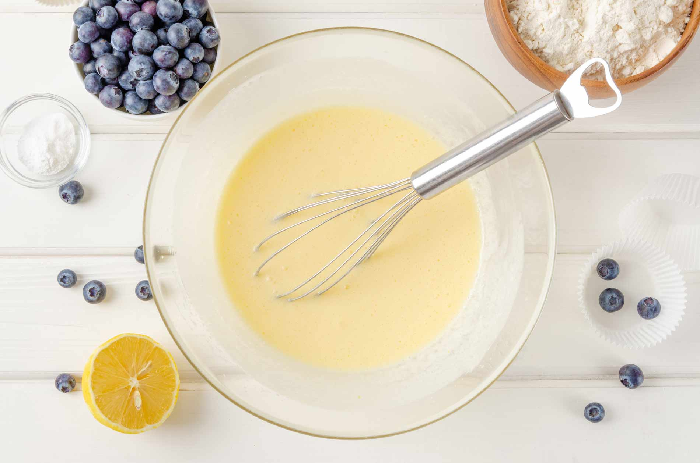
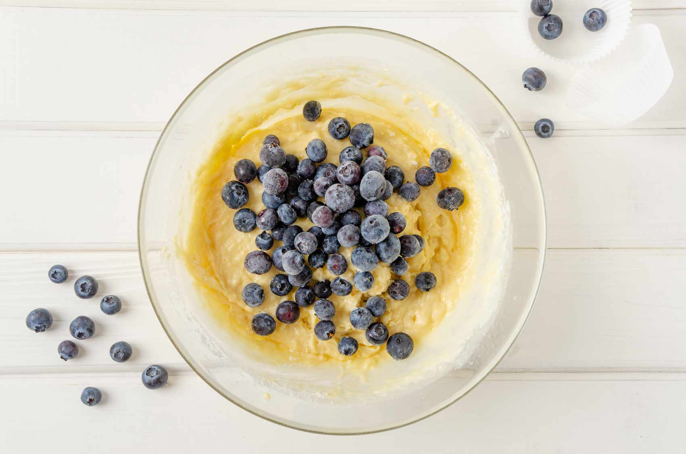
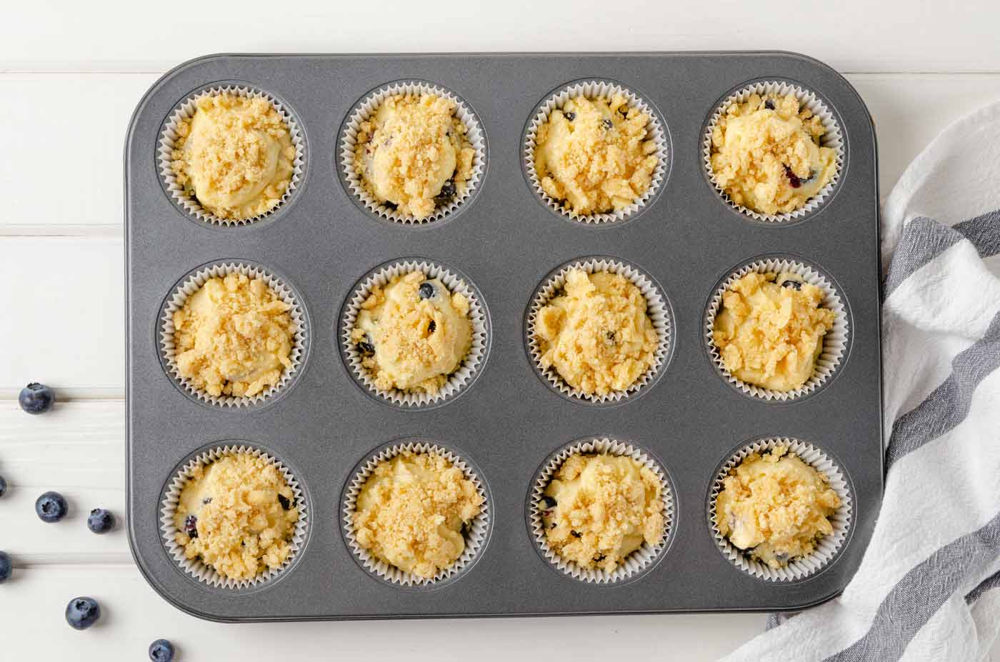

In 1985, The Times published a recipe for the blueberry muffins served at the Ritz-Carlton hotel in Boston, which Marian Burros, who adapted the recipe, judged among her favorite muffins in the city. A few years later, a reader wrote Marian to say that the best blueberry muffins in Boston were in fact from the now-closed Jordan Marsh department store. Marian tracked down and adapted that recipe so you can judge for yourself. But the origins of the Jordan Marsh recipe were unclear until 2023, when Mara Richmond of Burlington, Vt., wrote The Times to say that the developer of the recipe was her father, Arnold Gitlin, then the executive food consultant for Allied Stores, which owned Jordan Marsh at the time. His recipe, Richmond said, was an adaptation from one in Esther Howland’s 1847 cookbook, “The New England Economical Housekeeper, and Family Receipt Book.” Everything old is new again. This version has a lot more sugar and butter and fewer eggs than the Ritz-Carlton muffins. It also calls for mashing a half cup of berries and adding them to the batter. This produces a very moist muffin, one that will stay fresh longer.
Ingredients
YIELD: 12 Muffins, Prep Time: 10 minutes, Cook Time: 30 minutes
- ½ cup of softened butter
- 1 ¼ cups sugar
- 2 eggs
- 1 teaspoon vanilla extract
- 2 cups flour
- ½ teaspoon salt
- 2 teaspoons baking powder
- ½ cup milk
- 2 cups blueberries, washed, drained, and picked over
- 3 teaspoons sugar
Steps
Step 1
Preheat the oven to 375.
Step 2
Cream the butter and sugar until light.
Step 3
Add the eggs, one at a time, beating well after each addition. Add vanilla.
Step 4
Sift together the flour, salt and baking powder, and add to the creamed mixture alternately with the milk.
Step 5
Crush ½ cup blueberries with a fork, and mix into the batter. Fold in the remaining whole berries.
Step 6
Line a 12 cup standard muffin tin with cupcake liners, and fill with batter. Sprinkle the 3 teaspoons sugar over the tops of the muffins, and bake at 375 degrees for about 30-35 minutes.
Step 7
Remove muffins from tin and cool at least 30 minutes. Store, uncovered, or the muffins will be too moist the second day, if they last that long.